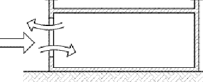
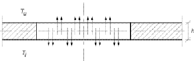
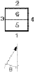
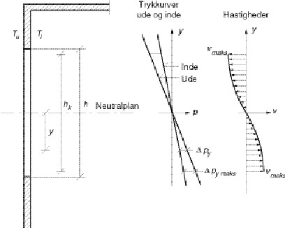

Extract from By og Byg Direction 202
Karl Terpager Andersen
Danish Building Research Institute
INTRODUCTION
Only natural ventilation is treated, and there will be distinguished between single sided ventilation, cross ventilation, bouncy ventilation and a combination of the two latter. Only one zone is considered in the simulations and only exchange of air to the ambient. Mixing is thus not part of the simulations. It is assumed that the number, size, location and orientation of the openings are known.
For simple simulations the following expression is used:
\[ q_v = \left| \pm q_{Vv}^{2} \pm q_{VT}^{2} \right|^{1/2} = \left| \frac{c_v}{|c_v|} (c_v v_{10})^2 + \frac{\Delta T}{|\Delta T|} \left( c_T |\Delta T|^{1/2} \right)^2 \right|^{1/2} \tag{1} \]
where:
qV is the total volume flow, m³/s,
qVv is the volume flow due to wind, m³/s,
qVT is the volume flow due to bouncy , m³/s
cv is a constant, determined by building and wind conditions,
cT is a constant , determined by building and temperature conditions,
v10 is the meteorological wind speed in open, flat country, measured in 10 meters height, m/s (weather data),
ΔT is the difference between indoor and outdoor temperature, K.
Equation (1) is an approximated expression when both wind and bouncy occurs and there are more than two openings. The flow direction is determined by the sign of cv and ΔT. Positive values are used is the flow is upwards in the zone. Bouncy alone occurs at calm, i.e. v10 = 0, which is assumed to be the case when v10 < 1,0 m/s. In the case of only wind, ΔT = 0.
SINGLE SIDE VENTILATION
Single side ventilation is characterised by having all openings located in the same external face, meaning; wind only influences the flow because of natural fluctuations of the wind speed.
Only an approximated expression exists for single sided ventilation, and the accuracy is uncertain.
One, vertical, rectangular opening or several identical, vertical, rectangular openings in the same level. Thermal bouncy.

If vertical, parabolic air speed distribution is assumed over the opening, equation (1) can be used with:
\[ c_T = \frac{1}{3} C_d A \left( \frac{gh}{T_i} \right)^{1/2} \tag{2} \]
hvor:
Cd is discharge coefficient for the opening (user/library),
A is the geometrical opening area, m²,
h is the geometrical height of the opening, m.
Several vertical openings in different levels. Thermal bouncy.
Equal to the conditions given in bouncy ventilation, which will be treated later.
One single, vertical opening. Thermal bouncy and wind.
Equation (1) can be used with cv = 0,03A and cT = 0,05h½A.
One single, horizontal opening. Termal bouncy.

**Equation (1) can be used with:
where:
A is the geometrical opening area, m²,
h is the "opening thickness" i.e. the thickness of a floor, m.
CROSS VENTILATION
Cross ventilation requires openings in more external surfaces, and is simulated only with contribution from wind. The wind pressure on the faces with the openings determines the pressure conditions and thus the air volumes.
Equation (1) can be used with cv determined by:
Two openings
Here cv can be determined by:
\[ c_v = \frac{C_{d1}A_1C_{d2}A_2}{\left( (C_{d1}A_1)^2 + (C_{d2}A_2)^2 \right)^½} \left| C_{p1} - C_{p2} \right|^½ kh^{\alpha} \tag{5} \]
where:
Cd1 is the discharge coefficient of the lowest opening,
Cd2 the discharge coefficient of the highest opening,
A1 is the geometrical area of the lowest opening, m²,
A2 is the geometrical area of the highest opening, m²,
Cp1 is the wind pressure coefficient on the building surface with the lowest opening (user/library, i.e. interpolation from table 1),
Cp2 is the wind pressure coefficient on the building surface with the highest opening (user/library, i.e. interpolation from table 1),
h is the vertical distance from terrain to ridge of roof, m,
k is a roughness factor, dependant on the terrain (user/library, given on "site" and/or found in table 2),
a is a height exponent, dependant on the terrain (table 2).

| Building part | Face no. | 0° | 45° | 90° | 135° | 180° | 225° | 270° | 315° |
|---|---|---|---|---|---|---|---|---|---|
| Facade | 1 | 0,2 | 0,05 | -0,25 | -0,3 | -0,25 | -0,3 | -0,25 | 0,05 |
| Facade | 2 | -0,25 | -0,3 | -0,25 | 0,05 | 0,2 | 0,05 | -0,25 | -0,3 |
| Facade | 3 | -0,25 | 0,05 | 0,2 | 0,05 | -0,25 | -0,3 | -0,25 | -0,3 |
| Facade | 4 | -0,25 | -0,3 | -0,25 | -0,3 | -0,25 | 0,05 | 0,2 | 0,05 |
| Pitched-roof, tilt < 10° | 5 og 6 | -0,5 | -0,5 | -0,4 | -0,5 | -0,5 | -0,5 | -0,4 | -0,5 |
| Pitched-roof, tilt 10–30° | 5 og 6 | -0,3 | -0,4 | -0,5 | -0,4 | -0,3 | -0,4 | -0,5 | -0,4 |
| Pitched-roof, tilt > 30° | 5 | 0,25 | -0,3 | -0,5 | -0,3 | -0,4 | -0,3 | -0,5 | -0,3 |
| Pitched-roof, tilt > 30° | 6 | -0,4 | -0,3 | -0,5 | -0,3 | 0,25 | -0,3 | -0,5 | -0,3 |
Table 1. Wind pressure coefficients depending on the wind direction q for buildings with up to 3 storeys, having a quadratic ground plan and surrounding buildings of the same height. The reference height is equal to the building height (Orme, Liddament & Wilson, 1998).
| Terrain type | roughness factor \(k\) | height exponent \(a\) |
|---|---|---|
| Open, flat country | 0,68 | 0,17 |
| Scattered wind breaks | 0,52 | 0,20 |
| Urban area | 0,35 | 0,25 |
| City centre | 0,21 | 0,33 |
Table 2. Factors for characterisation of different terrain types (British Standard Institution, 1991).
More openings
The internal pressure pi is determined by the mass balance equation:
\[ \sum_{j=1}^{n} C_{d,j} A_j \left( \frac{|2\Delta p_j|}{\rho} \right)^½ \frac{\Delta p_j}{|\Delta p_j|} = 0 \tag{6} \]
where index j is the j'te opening, and where:
\[ \Delta p_j = p_{v,j} - p_i = ½ C_{p,j} \rho_u v_{ref}^{2} - p_i \neq 0 \tag{7} \]
The last fraction in equation (6) determines the direction of the flow so Δpj > 0 give a positive flow and Δpj < 0 a negative flow. The equation is solved numerically.
Then cv can be determined by:
\[ c_v = \sum_{1}^{n_u} C_{d,j} A_j \left( C_{p,j} - \frac{2 p_i}{\rho_u (kh^{\alpha} v_{10})^2} \right)^½ kh^{\alpha} \tag{8} \]
where nv gives the openings where Δpj > 0 and the bracket in equation (8) will then be > 0.
BOUYANCY VENTILATION
Using buoyancy ventilation a large pressure difference has to be established by creating a large vertical distance between inlet and outlet openings. It has no influence if the openings are vertical, horizontal or in-between. Equation (1) can be used with cT determined from the following.
A distinction is made between uniform indoor temperature and indoor temperature with a vertical linear temperature gradient, using the c.

Uniform temperature and two openings
Here cT can be determined by:
\[ c_T = C_{d1} A_1 \left( \frac{2g (H_0 - H_1)}{T_i} \right)^½ \tag{9} \]
where:
\[ H_0 = \frac{(C_{d1} A_1)^2 H_1 + (C_{d2} A_2)^2 H_2}{(C_{d1} A_1)^2+(C_{d2} A_2)^2} \tag{10} \]
H0 is the vertical distance from the lowest floor plan to the neutral plan, m (calculated from (10)),
H1 is the vertical distance from the lowest floor plan to the lowest opening, m,
H2 is the vertical distance from the lowest floor plan to the highest opening, m,
g is the gravity, m/s² (= 9,82 m/s²)
Ti is the indoor temperature,
K (calculated by tsbi5).
Uniform temperature and more openings
The location of the neutral plane is determined by the mass balance equation:
\[ \sum_{j=1}^{n} C_{d,j} A_j |H_0 - H_j|^½ \frac{H_0 - H_j}{|H_0 - H_j|} = 0 \tag{11} \]
The square-root part expresses the air-flow speed and the fraction ensures the sign of the flow in a way that flow though openings below the neutral plane is positive and vice versa. The equation is solved numerically.
cT can then be determined by:
\[ c_T = \sum_{j=1}^{n_0} C_{d,j} A_j \left( \frac{2 (H_0 - H_j) g}{T_i} \right)^½ \tag{12} \]
where n0 is the number of openings below the neutral plane.
Linear, vertical temperature gradient and two openings
This case can be handled as the case with uniform indoor temperature, if the indoor temperature is assumed to be equal to the average temperature. The error will be less than 5 %.
Equation (12) can be used as an approximation with an indoor temperature equal to the average temperature.
Limitations
The expressions for calculation of the buoyancy ventilation will only give a correct volume flow if the neutral plane do not cross any opening.
Having two openings, crossing is avoided if for A1 > A2 the following is valid:
\[ H_2 - H_1 = H \geq \frac{h_1}{2} + \frac{4}{9} \left( \frac{C_{d1}A_1}{C_{d2}A_2} \right)^2 h_1 \tag{13} \]
for A1 < A2:
\[ H_2 - H_1 = H \geq \frac{h_2}{2} + \frac{4}{9} \left( \frac{C_{d2}A_2}{C_{d1}A_1} \right)^2 h_2 \tag{14} \]
hvor:
H is the vertical distance between the two openings, m,
h1 is the opening height of the lower opening, m,
h2 is the opening height of the upper opening, m.
In the case of more than two openings a good approximation of the volume flow can be calculated of equation (13) and (14) is true when index 1 referrers to the lowest opening and index 2 to highest opening. At the same time all openings in-between must have opening heights lass than the minor of A1 and A2.
COMBINED buoyancy and cross VENTILATION - SIMPLE APPROXIMATION
Equation (1) with cv and cT determined as shown below can be used.
Uniform indoor temperature and two openings
The constant cT is determined from equation (9) - (10), and the constant cv from equation (5):
\[ \mathbf{c}_v = \frac{\mathbf{C}_{p1} - \mathbf{C}_{p2}}{|\mathbf{C}_{p1} - \mathbf{C}_{p2}|} \cdot \frac{C_{d1} A_1 C_{d2} A_2}{\left( (C_{d1} A_1)^2 + (C_{d2} A_2)^2 \right)^{½}} \left| \mathbf{C}_{p1} - \mathbf{C}_{p2} \right|^{½} k h^\alpha \tag{15} \]
Uniform indoor temperature gradient and more openings
An approximated result (error less than 15 %) is obtained with cv found by (8) and cT found by (12). It is not possible, in a simple way to determine the sign of cV It is thus assumed to positive, which will be the normal case with openings i.e. in the roof.
Linear, vertical temperature gradient with two or more openings
The same equation as used for uniform temperature gradient can be used with good approximation if the indoor temperature is the same as the average temperature.
Limitations
One will be on the safe side if the same requirements regarding opening sizes and distances are used as in the case of buoyancy ventilation.
COMBINED buoyancy AND cross VENTILATION - ADVANCED
The correct method in the case of combined buoyancy and cross ventilation is to determine the pressure pi from the mass balance equation (6) using the pressure difference Δpi determined by:
\[ \Delta p_j = p_j - p_i = \left( ½ \rho_u C_{pj} v_{ref}^2 + \rho_u g (H_{0,ref} - H_j) \frac{\Delta T}{T_i} \right) -p_i \neq 0 \tag{16} \]
The size of H0,ref is the vertical distance from the lowest floor plan to a reference level, which in the same time is the level where the indoor pressure is pi. The reference level can be the neutral plane level, found if only buoyancy driven ventilation is assumed. It can also be in the vertical centre of the room, or the simplest (in terms of calculations) location, the floor level, where H0,ref = 0.
Now the volume flow can be found from:
\[ q_v = \sum_{j=1}^{n_1} C_{d,j} A_j \left( \frac{2 \Delta p_j}{\rho} \right)^½ \tag{17} \]
where n1 is the number of openings where the pressure difference \(\Delta\)pj > 0 (n1 calculated).
Limitations
One will be at the safe side if the same requirements are given regarding opening sizes and distances as found under the calculation of buoyancy driven ventilation.